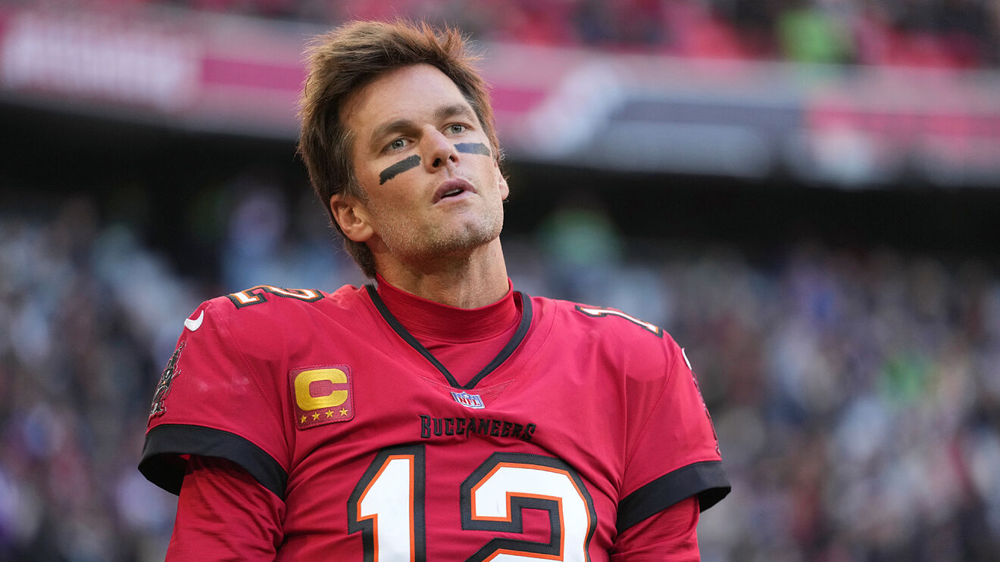
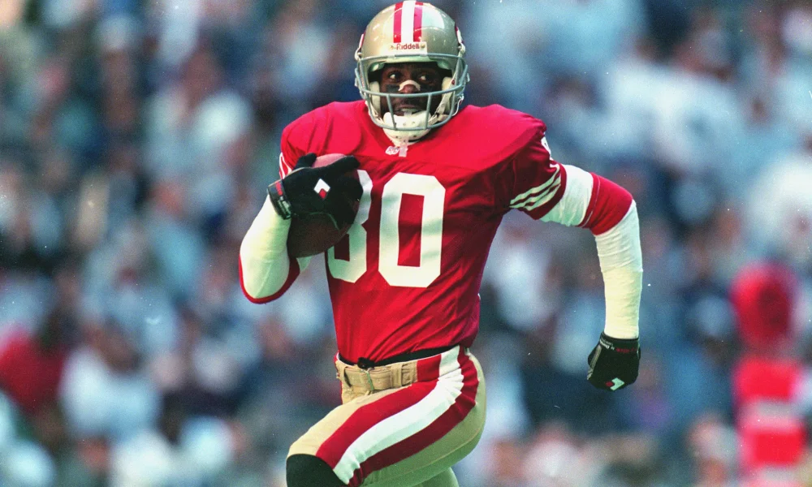
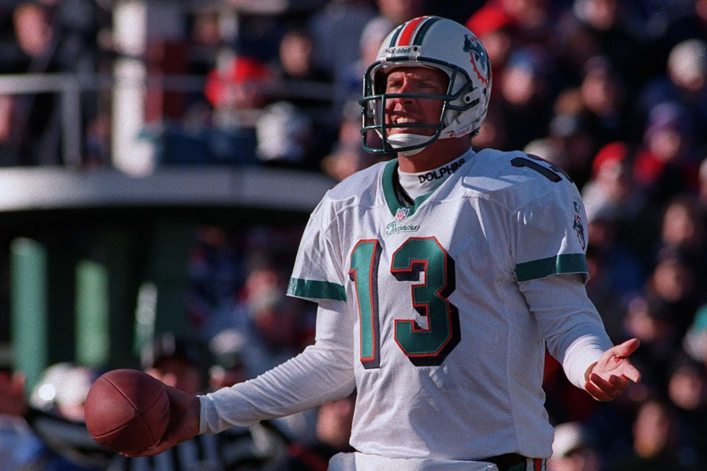
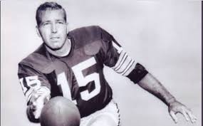
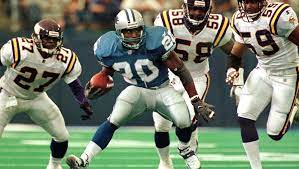
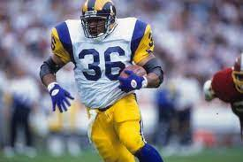
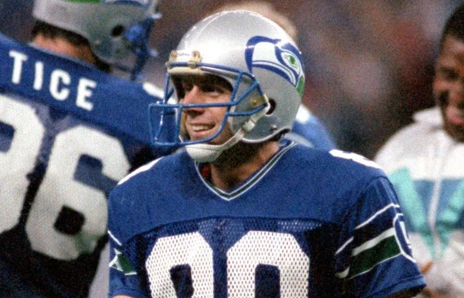
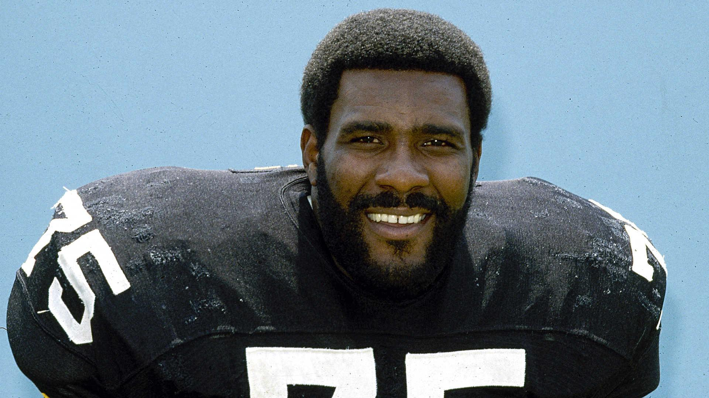
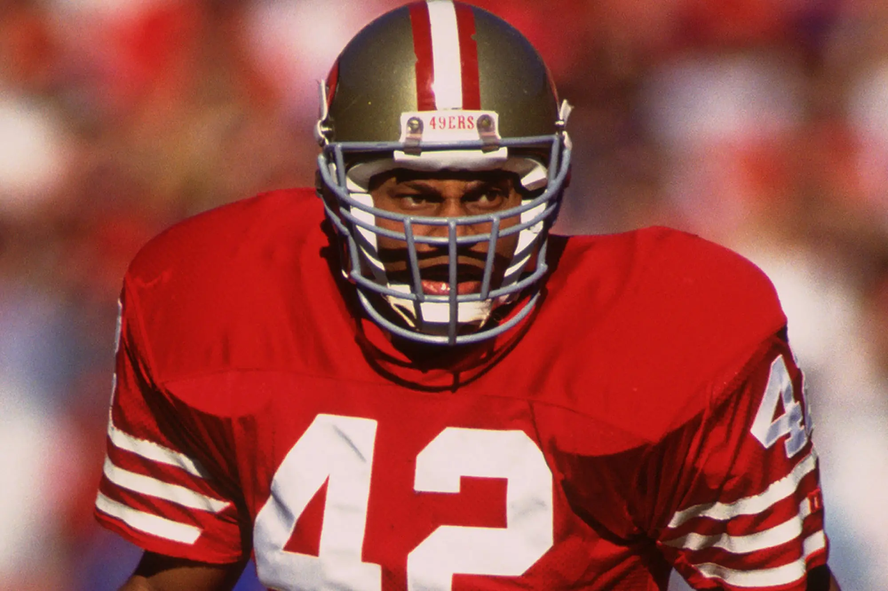

"Jugadores leyenda"
Aqui hablaremos sobre jugadores que dejaron una huella en este deporte ya sea por su carrera,records etc...
"Tom brady"

Primero hablemos de para mi el mas grande de todos los tiempos " Tom brady" estudio en la universidad de michigan fue drafteado en el draft de 2000 en la pick 199 de la 6ta ronda
por los new england patriots, a muchos no les convencia ya que decian que seria un fracaso por su fisico, no era el mejor pero era algo
pero la vida tenia mjores planes para el jugo 22 temporadas jugo play-offs 20 de sus 22 temporadas y gano 7 super bowls "6 con los patriotas y 1 con los buccaneros de tampa bay".
"Jerry rice"

"Jerry Lee Rice" es conciderado el mejor WR de la historia "mas de 22,000 yardas totales 197 toucdows
en 14 temporadas tuvo mas de 1,000 yardas, fue llamado 13 veces al pro bowl y gano 3 SB el 1988,1989 y 1994". Aunque muchos dicen que utilizaba unos guantes especiales con mas agarre alguna vez le preguntaron eso y lo que dijo fue "mmmm no dire que esa especulacion esta de el todo erronea".
"Dick butkus"

"Richard Marvin Dick Butkus" fue un linebaker muy temido en la epoca de los "60 y 70" ya que el tenia un temperamento de el mismisimo demonio, el
mismo decia que cuando tacleaba a un jugador no trataba de mandarlo al hosítal si no... ¡al mismisimo cementerio!,ademas muchos de sus contrincantes decian que el los mordia ya que casualmente equipo que se enfrentaba a butkus
jugadores terminaban con mordidas sin duda fue alguien muy explosivo es mas hasta se peleaba con los arbitros cuando su decision no les parecia justa, lastimosamente nunca pudo ganar un super bowl ya que por ese entonces los chicago bears estaban pasando un mal momento.
"Dan marino"

"Daniel Constantine Marino Jr." jugo en la univeridad de pittburg antes de ser drafteado en la "legendaria generacion de el draft de 1983"
fue elegido con el pick n27 global por los miami dolphins jugo un total de 16 temporadas en algunos de sus recors fue el primer "QR" las 4,000 y 5,000
yardas lanzadas en una temporada, solo pudo jugar un super bowl fue contra los 49ers de el legendario joe montana el cual perderia dan intento volver a otro "SB"
pero por mas que lo intento no pudo y en el ultimo partido de su carrera que fue contra los "jacksonvile jaguars" perdio siendo apaleado con un marcado de "62-7"
una despedia muy triste para uno de los mejores reyes sin corona.
"Barr star"

Cuando hablamos de "Barr star" estamos hablando de historia pura ganador de el "SB 1 (1965) y 2 (1966) junto con el legendario entrenador que le da nombre al trofeo de campeon "vince lombardi"
por ese entonces tenia el record de mas yardas lanzadas,mas anotaciones lanzadas,mas pases completados ademas de ser inducido al salon de la fama sin duda un pionero de este deporte.
"Barry sanders"
}

"Barry Sanders" jugo para la universidad de "oklahoma state" en la posicion de "RB" corredor, antes de ser drafteado en la mitrica generacion de 1989 fue el 3er pick global y fue seleccionado por los detroit lions
su impacto fue de inmediato en us 10 temporadas en activo supero las 1,000 yardas terrestres en todas ellas ademas de regresar a los leones a play-offs despues de mucho tiempo si hubiese jugado otras 3 temporadas mas podria haver superado al mitico walter payton
que por ese entonces era el lider en yardas terrestres.
"Jerome bettis" Alias "The bus"

"Jerome Abram Bettis Sr." fue un "RB" el cual jugo en los "St.louis Rams" de 1993 a 1995 y con los "Steelers Pittsburgh"
corrio un total de 13,664 yardas en su carrera con 91 touchdowns, 200 recepciones 1,457 yardas en recepcion
y 3 touchdowns por recepcion, entre sus logros personales son "rookie ofensivo de el año, trofeo walter payton en 2001, 2 veces seleccionado
al 1er equipo ALL-PRO en 1993 y 1996 ademas de ser convocado al Pro Bowl en 6 ocaciones" pero su mayor logro
fue ganar el SB 40 el 2006 fue su ultimo año de carrera y ese SB se jugaria en "Detroit" lugar donde nacio muchos especularon que ese SB estuvo arreglado
pq en el juego hubo muchas infracciones a favor de los steelers.
"Steve Largent" Alias "biologo de Tulsa"

"Stephen Michael Largent" jugo en la univeridad de "tulsa" en oklahoma, fue selecionado en el draft de 1976 por los extintos "houston oilers"
en el pick n°117 pero seria cambiado a los seattle seahawks,donde se convertiria en leyenda sus numeros para la epoca eran ecepcionales
fue el primer receptor en conseguir "100 anotaciones de touchdown, consiguio un total de 13,089 yardas y consiguio un total de 819 recepciones en su carrera"
entre sus logros personales estan "ser el jugador de el año en 1988, ser convocado 7 veces al juego ALL-PRO, ser el lider en yardas en las temporadas de 1979 y 1985, ser seleccionado para el equipo de la decada de los "80" su n°80 fue retirado por el equipo y en la universidad de tulsa en n°83 fue retirado"
"Derrick Broocks"

"Derrick Dewan broocks" jugo en la universidad de "Florida state" de (1991 a 1994) en la posicion de "Linebaker" fue seleccionado en el draft de 1995 en el pick n°28 por los "tampa bay buccaners"
en sus 13 años de carrera consiguio "1,715 tackleos, 13.5 capturas de QB, 25 intercepciones, 24 fumbles forsados y 7 pick six anotados" entre sus logros personales estan "Ser jugador defensivo de el año (2002) ganador de el trofeo walter payton el año (2000)
ser convocado a 11 PRO-BOWLS, jugador de el equipo de la decada de los 2000s,jugador ALL-America en (1993 y 1994) ganador de el trofeo Barr star en (2004),su n°55 fue retirado de el equipo y florida state le hizo honor a el n°10" pero su mayor logro fue ganar el "SB35"
en el cual fue seleccionado como mvp.
"Joe Mean Greene"

"Charles Edward Greene" jugo en la universidad de "North texas como LB" antes de ser seleccionado en el draft de (1969) en el pick n°4 global por los "Pittsburgh Steelers" jugo un total de 12 temporadas en las cuales consiguio
"Ganar un total de 4SB el (9,10,13 y 14) ademas de ser retirado su N°75 en su honor" ademas despues de su retiro paso 16 años como "Entrenador asistente" en los equipos de "Pittsburgh,Miami y Arizona" ademas que en esa posicion gano los "SB 40 y 43".
"Ronnie Lott"

"Ronald Mandel Lott" jugo en la universidad de "USC" o south carolina university de (1977 a 1980) en la posicion de "S" Safety, fue seleccionado en el pick n°8 de el draft de "1981" por los "San francisco 49ers" tuvo un total de 14 temporadas en las cuales paso por 4 equipos los "ANG" Rayders, los "NY" Jets, los "KC" Chiefs y los "SF" 49ers
entre sus logros personales estan "ser seleccionado 8 veces al 1er equipo ALL-PRO" "ser seleccionado para 10 Pro bowls" "lider de intercepciones en 2 ocaciones en (1986 y 1991)" "Seleccionado a los equipos de las decadas de los 80s y 90s ademas de el All-time de los 75 y 100 años de la NFL" gano un total de "4SB" el n° (16,19,23 y 24)
en sus estadisticas personales estan "1,146 tackleos, 63 intercepciones, 16 fumbles forsados, 17 fumbles recuperados y 730 yardas de regreso" sin duda uno de los mejores de la historia.
"LaDainian Tomlinson"

"LaDainian Tarshane Tomlinson" jugo en la universidad de "TCU en la posicion de "RB" corredor y fue seleccionado en el pick n°5 global de el draft de el año "2001" jugo un total de 10 temporadas, en las cuales paso por 2 equipos y eso son los "SD" Chargers y los "NY" Yets, entre sus estadisticas personales estan "13,684 yardas por tierra, con 145 touchdowns por tierra, 624 recepciones, 4,772 yardas po aire y un total de 17 touchdowns por aire " ademas de hostentar los siguientes records "Mas touchdowns por tierra en una temporada con 28, mas puntos anotados en una temporada con 186 y mas juegos consecutivos anotando touchdown con 18 juegos seguidos" y por ultimo entre sus logros personales estan "Mejor jugador en 2006, jugador ofensivo en 2006, ganador de el trofeo walter payton en 2006, seleccionado 3 veces al equipo All-PRO, seleccionado a 5 PRO-BOWLS, lider en yardas por tierra en 2006 y 2007, lider en touchdowns por tierra en 3 ocaciones en 2004,2006 y 2007, ser jugador de el equipo de la decada de los 2000s y por ultimo su n°21 fue retirado por honor a el" sin duda uno de los mejores corredores de la (NFL).
"Ray lewis"

"Raymond Anthony Lewis jr." jugo en la universidad de "Miami florida" en la posicion de "LB" linebaker, fue seleccionado en el draft de el año "1996" con el pick n°26 global por los "BR" ravens, el tuvo un total de 16 temporadas en el mismo equipo
entre sus estadisticas personales estan "2,059 tackleos totales, 41.5 sacks, 67 pases defendidos, 31 intercepciones, 17 fumbles forzados, 20 fumbles recuperados y 3 pick-six" y entre sus logros personales estan "2 veces seleccionado a jugador defensivo de el año,
7 veces seleccionado al primer equipo ALL-PRO, con 13 PRO-BOWLS, 3 veces lider en tackleos en (1997,1999 y 2001), ademas entre sus records entan mas tackleos en una sola temporada con (156) mas tackleos para un solo jugador con 2,059 " y por ultimo gano "2SB" el n°35 en el cual fue "MVP de el partido" y gano el n°47. A mi gusto uno de mis 5 defensivos favoritos.
"Lawrence Taylor"

Lawrence Julis Taylor" jugo en la universidad de "North carolina" en la posicion de "MLB" linebaker medio el fue seleccionado en el draft de "1981" con el pick n°2 global con los "NY" giants, jugo un total de 12 temporadas, entre sus estadisticas personales estan "1,089 tackleos totales, 142 sacks, 54 fumbles forsados y 9 intercepciones" entre sus logros personales estan
"3 veces jugador defensivo de el año en (1981,1982 y 1986), rookie defensivo de el año, 8 veces seleccionado al primer equipo ALL-PRO, 10 PRO-BOWLS, jugador de el equipo de la decada de los 2000s, jugador de el equipo de los 75 y 100 años de la (NFL), 2 veces jugador de el año de la conferencia nacional y su n°56 fue retirado por los giants y en north carolina retiraron su n°98" por ultimo
gano "2SB" el "21 y 25" ademas de ser el jugador mejor valorado en 1986.